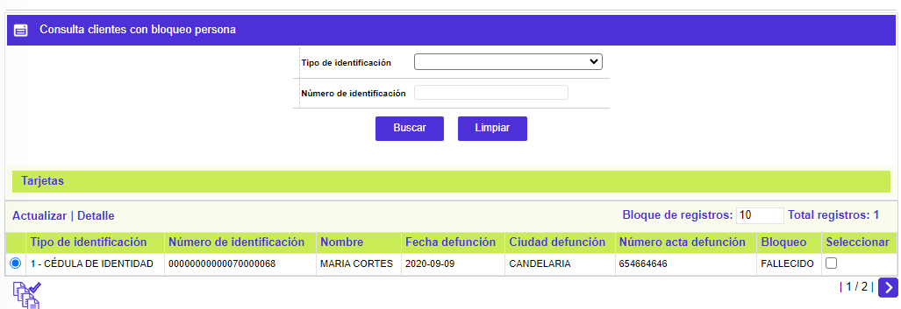
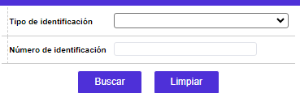
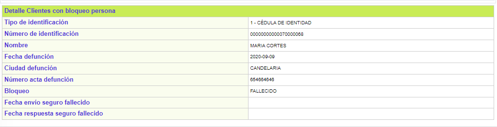
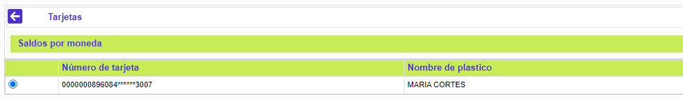
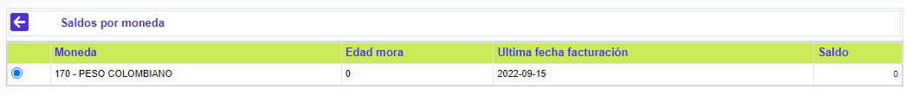

Consulta clientes con bloqueo persona
Mediante este formulario, se habilita la consulta de la información de los clientes a los que se les ha generado la novedad de bloqueo de persona por fallecimiento, o incapacidad total o permanente. A partir de esta opción, es posible generar un archivo plano, con la información básica requerida para solicitar a la compañía de seguros, la cancelación de los saldos insolutos de las obligaciones a cargo de los clientes fallecidos o con incapacidad total, según aplique.

Descripción de campos
Tipo de identificación |
Campo de salida que muestra el tipo de documento de identificación correspondiente al cliente que se está consultando. |
Número de identificación |
Este campo de salida despliega el número del documento de identificación del cliente con bloqueo. |
Nombre |
En este campo se muestra el nombre del cliente a quien pertenece el tipo y número de identificación y que se encuentra con bloqueo. |
Fecha defunción |
Campo en el que se despliega según el caso la fecha de defunción registrada al momento de generar la novedad de bloqueo al cliente. |
Ciudad defunción |
En este campo se muestra según el caso la ciudad de defunción registrada al momento de generar la novedad de bloqueo al cliente |
Número acta de defunción |
Campo en el que se despliega según el caso el número del acta de defunción registrada al momento de generar la novedad de bloqueo al cliente |
Bloqueo |
En este campo se muestra entre Fallecido o Incapacidad el tipo de bloqueo aplicado al cliente. |
Seleccionar |
Campo en el que el usuario puede seleccionar aquellos registros para los cuales desea generar el archivo con destino a la compañía de seguros. |
El formulario cuenta con un filtro que le permite al usuario consultar por el tipo y número de identificación del cliente.

El formulario contiene las opciones Actualizar y Detalle. De igual manera, contiene un hipervínculo que permite al usuario consultar las tarjetas de las cuales el cliente es titular y un botón para generar el archivo
Actualizar: Si el usuario selecciona un registro e invoca la opción Actualizar se despliega un formulario en el cual el único campo modificable es la Fecha respuesta seguro fallecido.

Descripción de campos
Tipo de identificación |
Campo de salida que muestra el tipo de documento de identificación correspondiente al cliente que se está consultando. |
Número de iidentificación |
Este campo de salida despliega el número del documento de identificación del cliente con bloqueo. |
Nombre |
En este campo se muestra el nombre del cliente a quien pertenece el tipo y número de identificación y que se encuentra con bloqueo. |
Bloqueo |
Campo en el que se indica entre Fallecido o Incapacidad el tipo de bloqueo aplicado al cliente. |
Fecha envío seguro |
Campo que muestra la fecha en que se remitió la reclamación al seguro. |
Fecha respuesta seguro fallecido |
En este campo en formato yyyy-mm-dd se registra la fecha en que la compañía de seguros generó respuesta a la reclamación presentada. |
Detalle: Si el usuario selecciona un registro e invoca la opción Detalle se despliega un formulario con los datos completos del registro y en el cual ninguno de sus campos es modificable.

Tarjetas: Si el usuario selecciona un registro e invoca la opción Tarjetas, se despliega un formulario en el cual se muestran en caso de existir, todas las tarjetas que el cliente que se encuentra bloqueado tiene con la entidad.

El formulario Tarjetas, contiene la opción Saldos por moneda, que le permite al usuario invocar un nuevo formulario en el cual se muestran los saldos actuales de cualquiera de las tarjetas seleccionadas.

Descripción de campos
Moneda |
Campo que muestra la moneda en la cual estàn denominados los diferentes conceptos de la cuenta. |
Edad de mora |
Este campo registra la altura de mora la cual se encuentra la tarjeta. |
Ultima fecha de facturación |
Cada vez que se ejecuta el proceso de facturación este campo es actualizado con la fecha correspondiente a la última fecha en la que se ejecutó de acuerdo con el ciclo. |
Saldo |
Campo donde se ilustra la deuda total de la tarjeta. |
Generar archivo: mediante este botón contenido en la parte inferior del formulario, el usuario puede generar un archivo con la información de las tarjetas que van a ser enviadas a la compañía de seguros para iniciar el proceso de reclamación. El usuario puede generar el archivo para todas las tarjetas que la consulta haya traído o seleccionar algunos registros específicos, avanzar a la segunda página del wizard y utilizar el botón para generar el archivo solo para las tarjetas escogidas.